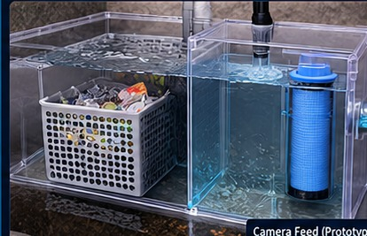

| # | Configuration | Inlet Flow | Captured | Outlet | Efficiency |
|---|---|---|---|---|---|
| No test runs yet | |||||
Import and map a dataset to start.
| Import a CSV to inspect actual values. |
| Source row | Target | Prediction |
|---|---|---|
| No dataset loaded. | ||
| ID | Test | Configuration | Input | Outlet | Efficiency | Captured kg | Time | Action |
|---|---|---|---|---|---|---|---|---|
| No test runs saved. | ||||||||
Choose a CSV from a public dataset or your own measurements. Original data is kept in this browser session only.
No dataset loaded.
Map only columns with compatible units and scientific meaning. Fields not present remain unavailable—not fabricated.
Import a CSV first.
At least 30 complete labeled rows are required. No synthetic rows are generated.
DURUM — urban stormwater microplastics
Research dataset; check sheet layout, units, missingness and sampling methods before training.
Open DURUM source ↗
MULTISOURCE stormwater sensor time series
Water-level and water-quality sensors; raw data may require quality checks. Not automatically a microplastic label dataset.
Open sensor dataset ↗
California OPC / SFEI microplastic observations
Multiple environmental matrices and methods; curate before cross-dataset training.
Open data source ↗
Diagnostics not run.
MIRAI PLASTISENSE
Automated software prototype for a multistage stormwater plastic interception concept.
Pipeline: CSV input → column mapping → data quality checks → analytics → model training and holdout validation → predictions and exported results.
Important distinction: this software prototype analyses imported datasets. It does not itself operate a physical chamber, detect microplastics from an arbitrary camera, or prove real-world removal efficiency.
Point accuracy cannot be promised in advance. Use measured, labeled and representative data; report MAE, RMSE and R², then validate against an independent field dataset.